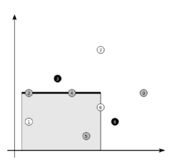

包含多组测试数据，第一行输入一个数T表示测试数据组数。
接下来T组测试数据，对于每组测试数据，第一行输入两个数n，k，分别表示点的个数和颜色数。
接下来n行每行描述一个点，前两个数z，y(lxl，lyl≤2^32-1)描述点的位置，最后一个数z(1≤z≤K）描述点的颜色。
平面上有n个点，每个点有k种颜色中的一个。
你可以选择一条水平的线段获得在其上方或其下方的所有点，如图所示：

请求出你最多能够得到多少点，使得获得的点并不包含所有的颜色。
包含多组测试数据，第一行输入一个数T表示测试数据组数。
接下来T组测试数据，对于每组测试数据，第一行输入两个数n，k，分别表示点的个数和颜色数。
接下来n行每行描述一个点，前两个数z，y(lxl，lyl≤2^32-1)描述点的位置，最后一个数z(1≤z≤K）描述点的颜色。
对于每组数据输出一行，每行一个数ans，表示答案。
1
10 3
1 2 3
2 1 1
2 4 2
3 5 3
4 4 2
5 1 2
6 3 1
6 7 1
7 2 3
9 4 2
5N<=100000，K<=100000，T<=3